٠ قبل أن تبدأ: ما هذا التطبيق وما ليس هو
ثلاث دقائق تقرأها الآن توفّر عليك سوء فهم لاحق.
- يعرض تعريف الرمز (DTC) باللغة المصدرية مع الأعراض والأسباب والمكوّنات.
- يربط الرمز بإجراء تشخيص مرتّب عندما يكون متوفرًا، ويشغّل جلسة تُسجّل كل خطوة.
- يحفظ الأكواد والإجراءات والجلسات على جهازك، ويعمل بالكامل بلا إنترنت.
- لا يتصل بالسيارة: لا وصلة OBD‑II، ولا بلوتوث، ولا ناقل CAN. أنت من يقرأ الرمز بجهاز فحص خارجي ثم يُدخله هنا.
- لا يربط الرمز بموديل أو سنة صنع محددة (هذه البيانات غير متوفرة في المصادر المفتوحة).
- لا يترجم النصوص الفنية إلى العربية، ولا يقدّم إجراءات رسمية من الشركات المصنّعة.
واجهة التطبيق مترجمة بالكامل إلى العربية (مع اتجاه RTL)، لكن النصوص الفنية للأعطال تظهر بلغتها الأصلية (الإنجليزية، والألمانية عند توفرها في المصدر)، لأن المصادر المفتوحة لا تحتوي ترجمات عربية موثوقة. لن تجد ترجمة آلية داخل التطبيق — وهذا قرار مقصود للحفاظ على الدقة الفنية.
| المصطلح في الواجهة | معناه |
|---|---|
| عام (SAE/ISO) | رمز معياري موحّد بين كل الشركات المصنّعة. |
| خاص بشركة مصنّعة | رمز يعني شيئًا مختلفًا عند شركة معيّنة، ويُعرض مع اسم الشركة. |
| غير منسوب لشركة | رمز موجود في المصدر دون تحديد الشركة التي تستخدمه. |
| التعريف الموسّع / الوصفي / الأساسي | مستوى ثراء البيانات: موسّع = مع أسباب وأعراض، وصفي = عنوان فقط، أساسي = غير متحقق منه. |
| إصلاح تحريري مرتّب | خطوات مجمّعة من مصادر عامة، وليست إجراءً رسميًا من الشركة المصنّعة. |
١ بدء سريع في دقيقة
إذا أردت النتيجة الآن دون قراءة الدليل كله، اتبع هذه الخطوات الخمس.
- افتح التطبيق وانتظر ثانية واحدة حتى تُثبَّت قاعدة البيانات الداخلية وتُتحقق بصمتها.
- اكتب الرمز في حقل البحث أعلى الشاشة الرئيسية — مثل
P0420— ثم اضغط بحث. - اضغط على النتيجة لتقرأ التعريف والأعراض والأسباب.
- ابحث عن قسم «خطوات تشخيص مرتّبة» في أسفل شاشة الرمز، ثم اضغط ابدأ التشخيص المنظم.
- أجب عن كل خطوة بـ«نجحت / فشلت / تم التخطي» وأضف ملاحظاتك، ثم أنهِ الجلسة لتحفظ النتيجة النهائية.
أيقونة العلامة (🔖) أعلى شاشة الرمز تحفظه في المحفوظات لتعود إليه لاحقًا دون بحث جديد.
٢ التثبيت والتشغيل الأول
التطبيق ملف APK واحد، ولا يطلب أي إذن حساس.
-
ثبّت ملف APK
انقل الملف إلى الهاتف وافتحه من مدير الملفات، أو استخدم سطر الأوامر من الحاسوب:
adb install -r app-release.apkقد يطلب أندرويد السماح بالتثبيت من مصدر غير معروف؛ اسمح بذلك مؤقتًا ثم أعد الإعداد.
-
شغّل التطبيق أول مرة
في أول تشغيل ينسخ التطبيق قاعدة البيانات المرفقة إلى مساحة التطبيق، ثم يتحقق من:
- بصمة الملف SHA‑256 مقابل ملف البيان (manifest).
- سلامة قاعدة البيانات (integrity_check).
- مطابقة إصدار المخطط الذي يفهمه التطبيق.
إن فشل أي فحص، لن تُستخدم البيانات المعطوبة أبدًا، وتظهر رسالة واضحة بدلًا من محتوى ناقص.
-
لا حاجة إلى إنترنت
كل المحتوى موجود داخل التطبيق. الإنترنت مطلوب فقط في حالتين اختياريتين: تحديث قاعدة البيانات، أو استخدام المساعد الذكي.
-
اضبط اللغة والمظهر
من الإعدادات ← اللغة والاتجاه اختر «العربية» أو «English» أو «لغة النظام»، ومن المظهر اختر فاتحًا أو داكنًا.
معناها أن النسخة المرفقة لم تُبنَ أو فشل التحقق منها. للمستخدم العادي: أعد تثبيت النسخة الرسمية.
للمطوّر: أعد بناء قاعدة البيانات بالأمر
python tools/build_database.py --sources-dir tools/.sources ثم أعد بناء التطبيق.
٣ الشاشة الرئيسية
نقطة الانطلاق: البحث، والأكواد الشائعة، والوصول السريع لكل شركة.
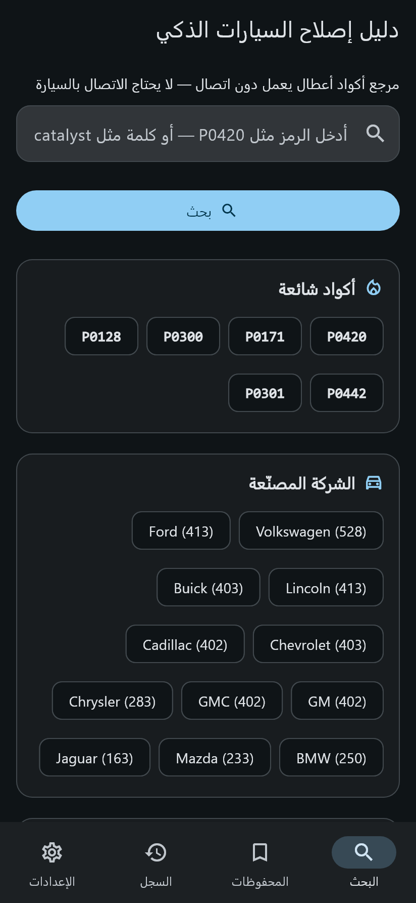
- حقل البحث — يقبل رمزًا كاملًا
P0420أو بدايتهP04أو كلمة إنجليزيةcatalyst. تظهر اقتراحات مباشرة بعد كتابة حرفين. - زر البحث — ينقلك إلى شاشة النتائج. (زر «بحث» في لوحة المفاتيح يفعل الشيء نفسه).
- أكواد شائعة — اختصارات لأكثر الرموز تكرارًا في الورشة: P0420، P0171، P0300، P0128، P0442، P0301.
- الشركة المصنّعة — ضغطة واحدة تفتح كل أكواد تلك الشركة مرتّبة حسب العدد. تُعرض 12 شركة من أصل 25.
- ملخص قاعدة البيانات — إصدار البيانات وعدد الأكواد والإجراءات، مع زر عرض الإحصاءات للتفاصيل الكاملة.
- شريط التنقل السفلي — البحث · المحفوظات · السجل · الإعدادات.
أسفل الشاشة الرئيسية
بالتمرير للأسفل تجد بطاقة إحصاءات مصغّرة وبطاقة إرشادات البحث:
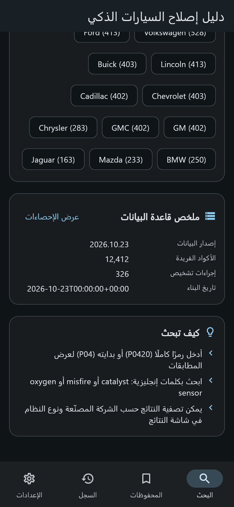
- ملخص قاعدة البيانات — إصدار البيانات، عدد الأكواد الفريدة، عدد إجراءات التشخيص، وتاريخ البناء.
- كيف تبحث — ثلاثة تذكيرات سريعة: ابحث بالرمز الكامل أو بدايته، ابحث بكلمات إنجليزية، وصفِّ النتائج من شاشة النتائج.
ابدأ دائمًا بالرمز كما قرأه جهاز الفحص. إن لم تجد نتيجة، جرّب البحث بالكلمة الوصفية
(misfire، oxygen sensor، catalyst) لأن بعض الرموز تُخزَّن بعنوان وصفي فقط.
٤ البحث والتصفية
من كتابة الرمز إلى قائمة نتائج مرتّبة حسب نوع المطابقة.
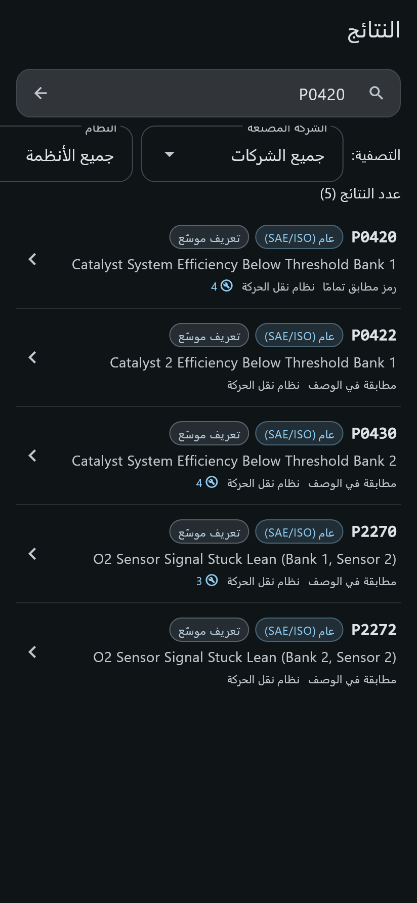
P0420 (5 نتائج)- حقل البحث — يمكنك تعديل الرمز هنا وإعادة البحث بالسهم الجانبي أو بزر «بحث» في لوحة المفاتيح.
- شريط التصفية — أفقي وقابل للتمرير: الشركة المصنّعة، النظام (نقل الحركة / الهيكل / الشاسيه / الشبكة)، والنطاق (عام / خاص بشركة / غير منسوب). عند تفعيل أي تصفية يظهر زر إزالة التصفية.
- عدد النتائج — يتغيّر فورًا مع كل تصفية.
- بطاقة النتيجة — الرمز بخط ثابت، شارة النطاق، العنوان، وسطر يوضح نوع المطابقة وعدد التعريفات المتاحة. اضغطها لفتح التفاصيل.
أنواع المطابقة التي يعرضها التطبيق
| العبارة | المعنى |
|---|---|
| رمز مطابق تمامًا | أدخلت الرمز كاملًا ووُجد له تعريف. |
| بادئة رمز | أدخلت جزءًا من الرمز (مثل P04) فتظهر كل الرموز التي تبدأ به. |
| مطابقة في العنوان | بحثك بالكلمة وجدها في عنوان التعريف. |
| مطابقة في الوصف | بحثك بالكلمة وجدها في نص الوصف. |
عندما لا توجد نتيجة
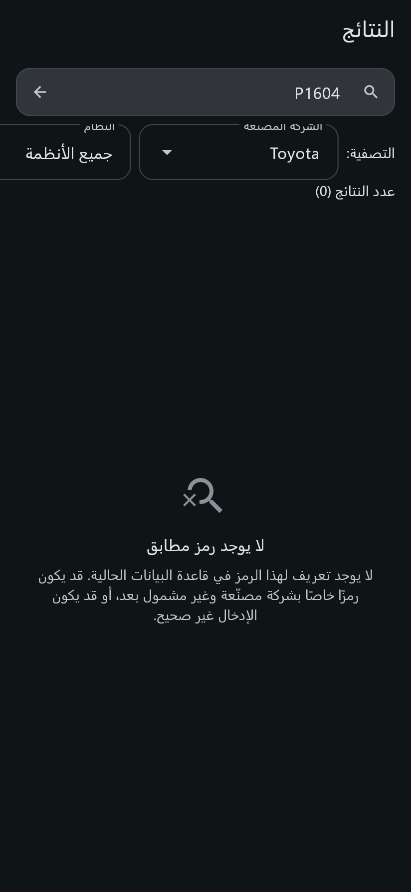
P1604 عند Toyota في قاعدة البيانات الحاليةالتطبيق لا يخترع تعريفًا ولا يخمّن. إذا لم يكن الرمز موجودًا لشركة معيّنة، يقول ذلك صراحةً ويشرح الاحتمالات: رمز خاص بشركة لم يُشمَل بعد، أو خطأ في الإدخال. هذه شاشة صدق، لا شاشة خطأ.
هذا الرمز موجود في القاعدة لكن لشركات أخرى (BMW، GM، مازدا، فولكسفاغن)، ولا يوجد له تعريف لدى تويوتا لأن المصدر المفتوح نفسه لا يضمّه. إن أردت المتابعة، ابحث عن الرمز دون تصفية الشركة، أو ابحث بالكلمة الوصفية.
٥ تفاصيل الرمز
الشاشة الأهم في التطبيق: كل ما تعرفه القاعدة عن الرمز في مكان واحد.
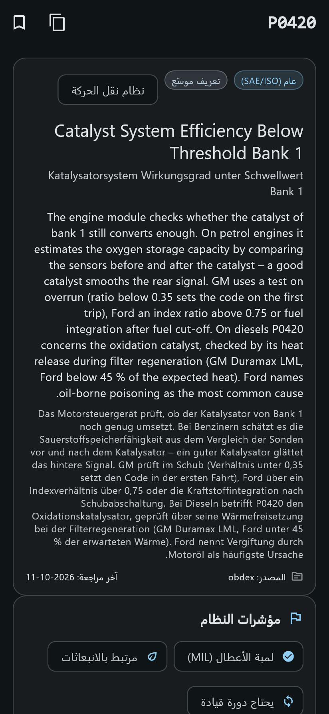
P0420- شارات التصنيف — النطاق (عام SAE/ISO)، مستوى البيانات (تعريف موسّع)، الشركة إن وُجدت، والنظام (نقل الحركة).
- العنوان — العنوان الإنجليزي، وتحته العنوان الألماني عندما يوفّره المصدر.
- الوصف — شرح فني لكيفية اكتشاف الوحدة للعطل وما يعنيه الرمز. النص بلغته الأصلية كما ورد في المصدر.
- سطر المصدر — من أين جاء التعريف (مثل
obdex) وتاريخ آخر مراجعة. - مؤشرات النظام — لمبة الأعطال (MIL)، ارتباطه بالانبعاثات، حاجته إلى دورة قيادة، وإمكانية تنفيذه شخصيًا مع درجة الصعوبة.
بقية الأقسام (بالتمرير)
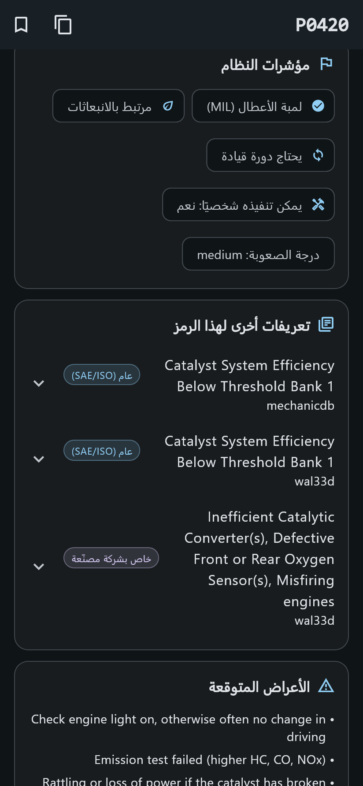
| القسم | ما ستجده فيه وكيف تستخدمه |
|---|---|
| تعريفات أخرى لهذا الرمز | قد يكون للرمز أكثر من تعريف من مصادر ونطاقات مختلفة (عام، خاص بشركة، وصفي). كل تعريف قابل للفتح على حدة، ولا تُدمج التعريفات معًا أبدًا. |
| الأعراض المتوقعة | ما يلاحظه السائق أو الفني عادةً. تنبيه دائم: الرمز يشير إلى عرض وليس إلى عطل مؤكد. |
| الأسباب المحتملة | مرتّبة مع وسم الاحتمال (مرتفع / متوسط / منخفض) ووسم الدليل (مدعوم بمصادر / اقتراح تحريري / احتمال عام). |
| المكونات المرتبطة | القطع التي يجب فحصها، وهي مدخل طبيعي لخطوات التشخيص. |
| أكواد مرتبطة | رموز تظهر عادةً مع هذا الرمز؛ اضغطها للانتقال إليها مباشرة. |
| مراجع عامة | روابط إلى صفحات المصدر الأصلية، تُفتح في المتصفح. |
| خطوات تشخيص مرتّبة | الإجراءات المرتبطة بالرمز. إن لم يوجد إجراء، يوضّح التطبيق ذلك بدل تركك تبحث عن شيء غير موجود. |
| نطاق السيارات | حاليًا يوضّح التطبيق أن ربط الرمز بالموديل/السنة غير متوفر، بدلًا من عرض بيانات مُخمّنة. |
العلامة 🔖 تحفظ الرمز في المحفوظات (وتتحول إلى علامة ممتلئة عند الحفظ). أيقونة النسخ تنسخ تقريرًا نصيًا بالرمز وتفاصيله لمشاركته مع عميل أو زميل.
٦ الإجراء التشخيصي
من «ما معنى الرمز؟» إلى «ماذا أفعل الآن؟» — بخطوات مرقّمة وقيم مرجعية.
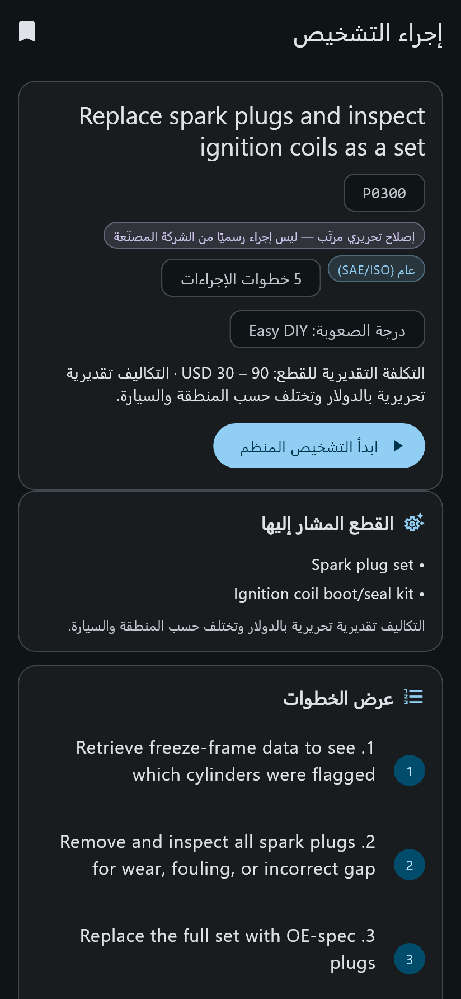
P0300 (5 خطوات)تتكوّن الشاشة من أربعة أجزاء:
- بطاقة الإجراء: العنوان، الرمز، شارة التحقق (إصلاح تحريري مرتّب — ليس إجراءً رسميًا)، النطاق، عدد الخطوات، درجة الصعوبة، والتكلفة التقديرية للقطع.
- القطع المشار إليها: ما يُتوقع استبداله، مع تنبيه أن التكاليف تقديرية بالدولار وتختلف حسب المنطقة.
- سبب هذا الترتيب وتحذيرات السلامة: لماذا تبدأ بهذه الخطوة أولًا، وما يجب تجنّبه.
- عرض الخطوات: كل خطوة بأدواتها وقيمتها المرجعية ونتيجتها المتوقعة، وأحيانًا الخطوة التالية عند الفشل.
ابدأ التشخيص المنظم ينشئ جلسة جديدة لهذا الإجراء. وإذا كانت لديك جلسة نشطة لنفس الإجراء، يتحول الزر إلى استئناف الجلسة ويعيدك إلى الخطوة التي توقفت عندها.
الإجراءات التفصيلية متوفرة لعدد محدود من الأكواد (326 إجراءً مقابل 12,412 رمزًا). عدم وجود إجراء لا يعني أن الرمز غير مدعوم — التعريف والأعراض والأسباب تبقى متاحة وصالحة.
٧ جلسة التشخيص خطوة بخطوة
هذه الميزة تحوّل الفحص من ملاحظات متناثرة إلى سجل منظّم يمكن الرجوع إليه.
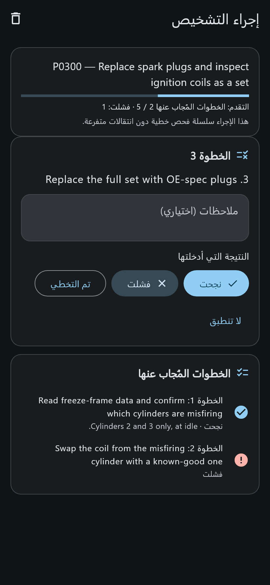
كيف تُدار الجلسة
- شريط التقدم — يوضّح عدد الخطوات المُجاب عنها، والخطوة الحالية، وعدد النتائج الفاشلة حتى الآن.
- الخطوة الحالية — نص الفحص المطلوب، وأحيانًا الأدوات والقيمة المرجعية والنتيجة المتوقعة.
- ملاحظات (اختياري) — اكتب ما قستَه فعلًا: قيمة المقاومة، رقم الأسطوانة، قراءة الجهاز. هذه الملاحظات تُحفظ مع الخطوة.
- النتيجة التي أدخلتها — ثلاثة أزرار: نجحت · فشلت · تم التخطي.
- الخطوات المُجاب عنها — قائمة قابلة للمراجعة بكل خطوة ونتيجتها وملاحظاتها، مع أيقونة خضراء للنجاح وحمراء للفشل.
- الإنهاء في أي وقت — «إنهاء الجلسة» يحفظ الحالة والنتيجة النهائية، ويمكنك ترك الجلسة مفتوحة والعودة إليها لاحقًا.
كيف يؤثر جوابك على المسار؟
بعض الإجراءات متفرّعة: جواب «نجحت» ينقلك إلى خطوة، و«فشلت» إلى خطوة أخرى. عندما تكون السلسلة خطية بالكامل يظهر تنبيه صريح: «هذا الإجراء سلسلة فحص خطية دون انتقالات متفرعة» — أي أن كل الخطوات ستُعرض بالترتيب.
النتيجة النهائية للجلسة
| الخيار | متى تختاره |
|---|---|
| الخطوة التالية للفحص — احتمال مرجّح | عندما تشير نتائجك إلى سبب واحد أرجح من غيره وتريد توثيق الخطوة التالية. |
| تم تحديد العطل وإصلاحه | عندما ينتهي الفحص إلى إصلاح مؤكد. |
| يحتاج تشخيصًا احترافيًا | عندما تتجاوز الحالة أدواتك أو خبرتك. |
| غير حاسم — يحتاج فحوصات إضافية | عندما تكون النتائج متضاربة. |
كل الجلسات (النشطة والمكتملة والمتروكة) تجدها في المحفوظات ← جلسات، ومنها تفتح أي جلسة لمراجعتها أو حذفها. حذف الجلسة يحذف خطواتها أيضًا، ويطلب التطبيق تأكيدًا قبل ذلك.
٨ المحفوظات
مكتبتك الشخصية: أكواد وإجراءات وجلسات في ثلاثة تبويبات.
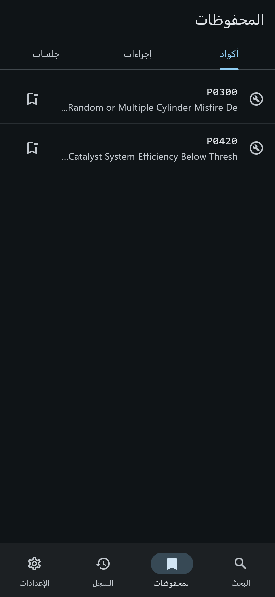
- أكواد — الرموز التي حفظتها من شاشة التفاصيل.
- إجراءات — الإجراءات التشخيصية المحفوظة من شاشة الإجراء.
- جلسات — كل جلسات التشخيص بحالاتها.
اضغط أي عنصر لفتحه، أو استخدم أيقونة الحذف لإزالته من القائمة. الحفظ لا يحتاج إنترنت ولا حساب، ويبقى محفوظًا بعد إغلاق التطبيق.
٩ سجل البحث
كل ما بحثت عنه، مع عدد النتائج — بما فيها عمليات البحث التي لم تُثمر.
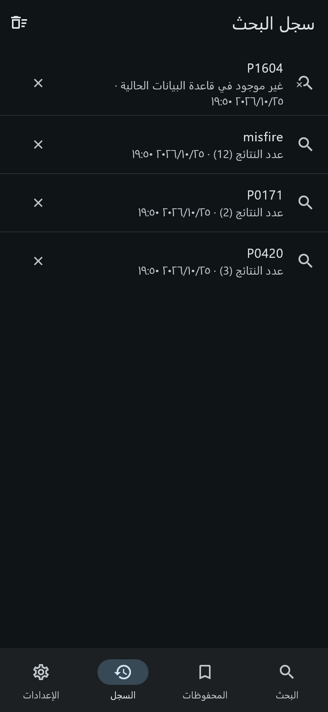
- اضغط السطر لإعادة تنفيذ نفس البحث فورًا.
- × يحذف سطرًا واحدًا.
- مسح السجل في الشريط العلوي يحذف كل السجل بعد تأكيد.
- الرمز غير الموجود يظهر بعبارة «غير موجود في قاعدة البيانات الحالية» — وهذا مفيد لتذكّر الرموز التي تحتاج بحثًا خارجيًا.
السجل محلي بالكامل، في قاعدة بيانات منفصلة عن قاعدة المحتوى، ولا يُرسل إلى أي جهة.
١٠ الإعدادات
اللغة، المظهر، المساعد الذكي، ومداخل البيانات.
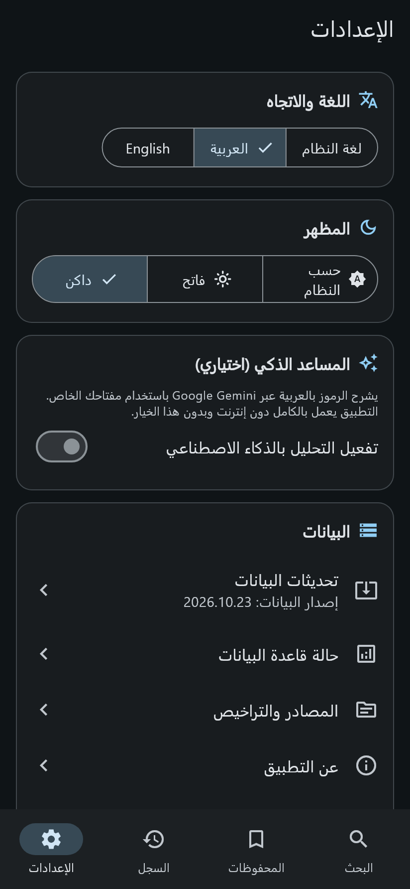
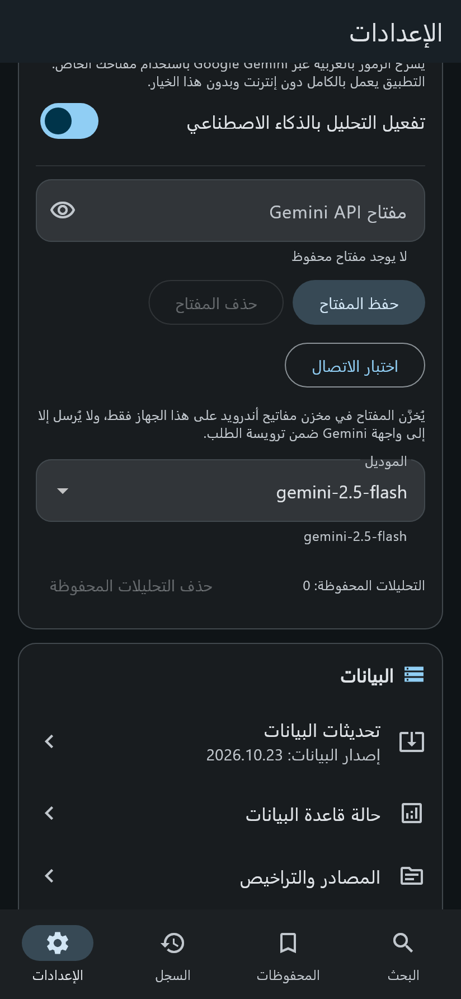
| الإعداد | الخيارات والأثر |
|---|---|
| اللغة والاتجاه | لغة النظام / العربية / English. تغيير اللغة يقلب اتجاه الواجهة تلقائيًا (RTL/LTR) دون إعادة تشغيل. |
| المظهر | حسب النظام / فاتح / داكن. الوضع الداكن مناسب للعمل داخل الورشة والإضاءة الخافتة. |
| المساعد الذكي | مُعطَّل افتراضيًا. عند تفعيله يظهر حقل المفتاح واختيار الموديل وإدارة التحليلات المحفوظة. |
| تحديثات البيانات | ينتقل إلى شاشة التحديث (القسم ١٢). |
| حالة قاعدة البيانات | ينتقل إلى شاشة الفحص والإحصاءات (القسم ١٣). |
| المصادر والتراخيص | قائمة المصادر وإسنادها ورخصها (القسم ١٤). |
| عن التطبيق | ما يعرفه التطبيق وما لا يعرفه، وبيان الصدق الفني. |
| تراخيص البرمجيات المفتوحة | تراخيص المكتبات المستخدمة داخل التطبيق. |
١١ المساعد الذكي (اختياري تمامًا)
شرح عربي مُختصر لرمز واحد، بمفتاحك الخاص، وعند طلبك فقط.
هذه الميزة تحتاج إنترنت ومفتاح Gemini API من Google AI Studio. التطبيق يعمل بالكامل بدونها، وهي مُعطَّلة افتراضيًا، ولا تُرسل شيئًا إلا عند ضغطك على زر التحليل.
التهيئة في خمس خطوات
- فعّل الخيار — من الإعدادات ← المساعد الذكي شغّل مفتاح «تفعيل التحليل بالذكاء الاصطناعي».
- احصل على مفتاح — أنشئ مفتاحًا من Google AI Studio (خارج التطبيق).
- ألصق المفتاح واحفظه — يُخزَّن في مخزن مفاتيح أندرويد على هذا الجهاز فقط، ولا يُكتب في ملفات الإعدادات العادية.
- اختبر الاتصال — زر «اختبار الاتصال» يؤكد أن المفتاح يعمل قبل أن تعتمد عليه.
- اختر الموديل — الافتراضي
gemini-2.5-flash، ويمكن تغييره من القائمة.
الاستخدام داخل شاشة الرمز
في أسفل شاشة تفاصيل الرمز يظهر قسم «شرح بالذكاء الاصطناعي (بالعربية)». اضغط تحليل بالذكاء الاصطناعي ليُرسل سجل الرمز فقط (من قاعدة البيانات المحلية) ويُعاد شرح عربي يتضمن: المعنى، الأسباب المحتملة، خطوات الفحص المقترحة، إصلاحات محتملة، تحذيرات السلامة، والأدوات.
- النتيجة تُوسم دائمًا بأنها منشأة بالذكاء الاصطناعي وليست توثيقًا من المصنّع.
- النتائج تُحفظ محليًا وتظهر بوسم «نتيجة محفوظة» عند إعادة الفتح — دون استهلاك طلب جديد.
- إعادة التوليد تطلب تحليلًا جديدًا، وحذف التحليلات المحفوظة في الإعدادات يمسحها كلها.
- أي فشل (مفتاح مرفوض، تجاوز الحد، انقطاع شبكة، مهلة) يظهر كرسالة واضحة، ولا يُستبدل بمحتوى مُخترع.
١٢ تحديثات البيانات
تحديث المحتوى لا يحتاج تحديث التطبيق — لكنه لا يُطبَّق إلا بعد اجتياز كل الفحوص.
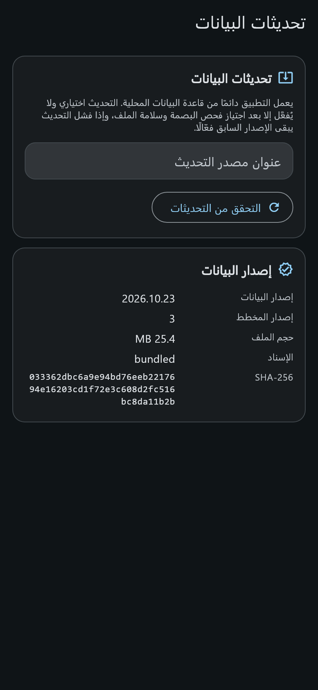
كيف تحدّث المحتوى
- اضبط المصدر — أدخل عنوانًا أساسيًا (أو مسارًا محليًا) يحتوي
manifest.jsonوملف قاعدة البيانات، ثم اضغط حفظ المصدر. - تحقّق — زر التحقق من التحديثات يقارن إصدار البيانات المتاح بالإصدار الفعّال.
- نزّل وتحقّق — التنزيل يمر بسلسلة فحوص قبل التفعيل.
- الاستعادة عند الحاجة — زر استعادة الإصدار السابق يعيد النسخة السابقة، ويظهر فقط عند وجود نسخة محفوظة.
سلسلة الفحص قبل التفعيل
| الفحص | ما يمنعه |
|---|---|
| حجم الملف | ملفات مقطوعة أو تنزيل غير مكتمل. |
| بصمة SHA‑256 | أي تعديل أو تلاعب في الملف. |
| سلامة قاعدة البيانات | ملفات تالفة لا تفتح. |
| إصدار المخطط | حزمة تحتاج إصدار تطبيق أحدث. |
| حد المعقولية | قاعدة بيانات «فارغة» تبدو صحيحة شكليًا. |
- التحديث لا يمسّ بياناتك: المحفوظات والسجل والجلسات في قاعدة منفصلة.
- إن فشل أي فحص، يبقى الإصدار السابق فعّالًا وتظهر رسالة السبب.
- لا يوجد تراجع تلقائي إلى إصدار أقدم — الاستعادة قرار صريح منك.
- التفعيل «ذرّي»: إما أن تُستبدل البيانات بالكامل أو لا شيء.
١٣ حالة قاعدة البيانات
الشاشة التي تجيب عن سؤال: «هل البيانات التي أرى فعليًا سليمة؟»
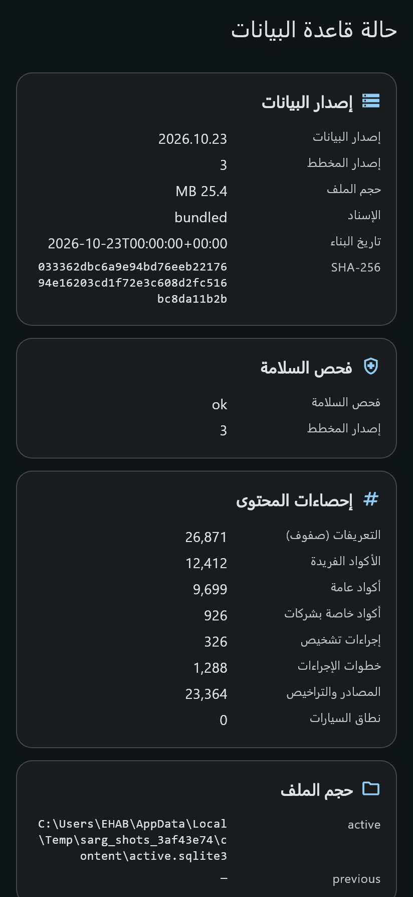
- إصدار البيانات
- تاريخ إصدار المحتوى، مثل
2026.10.23. - إصدار المخطط
- بنية الجداول التي يتوقعها التطبيق (حاليًا 3).
- حجم الملف
- حجم قاعدة البيانات الفعّالة.
- الإسناد (origin)
- من أين جاءت النسخة: مرفقة مع التطبيق (bundled) أو من تحديث.
- SHA‑256
- البصمة التي تُقارن مع البيان — دليل عدم التلاعب.
- فحص السلامة
- نتيجة integrity_check: يجب أن تكون
ok.
ثم تأتي إحصاءات المحتوى: التعريفات (صفوف)، الأكواد الفريدة، الأكواد العامة، أكواد الشركات، إجراءات التشخيص، خطوات الإجراءات، المصادر والتراخيص، ونطاق السيارات.
«التعريفات» أكبر من «الأكواد الفريدة» لأن الرمز الواحد قد يرد بعدة تعريفات من مصادر مختلفة. و«نطاق السيارات = 0» معلومة صحيحة ومقصودة: لا يوجد ربط موثّق بين الرموز والموديلات في المصادر المفتوحة.
١٤ المصادر والتراخيص
كل سطر في قاعدة البيانات يعرف من أين جاء — وهذا ما تعرضه هذه الشاشة.
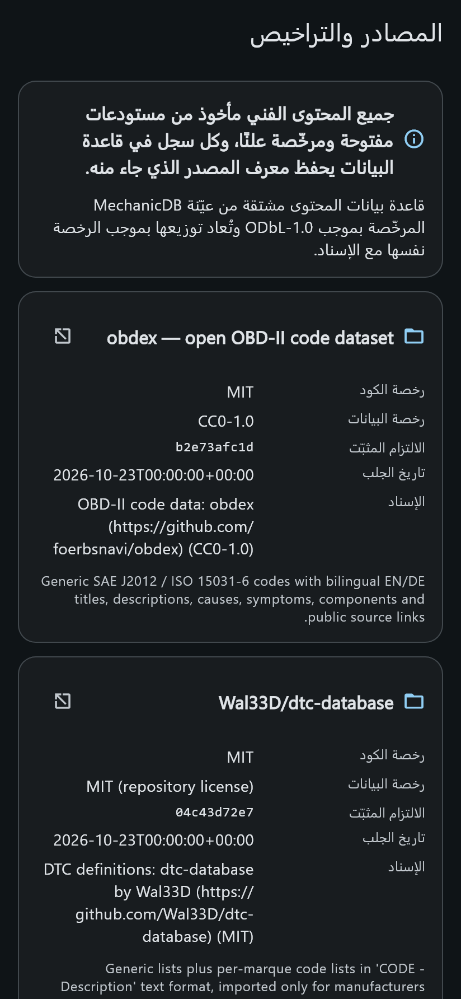
لكل مصدر تُعرض: رخصة الكود، رخصة البيانات، الالتزام المثبّت (commit)، تاريخ الجلب، الإسناد، ووصف المحتوى المستورد.
| المصدر | الرخصة | الالتزامات |
|---|---|---|
| obdex | بيانات CC0‑1.0 | لا توجد قيود. |
| Wal33D/dtc-database | MIT | حفظ نص الترخيص والإسناد. |
| MechanicDB (عيّنة عامة) | ODbL‑1.0 | الإسناد + مشاركة الرخصة نفسها على قاعدة البيانات المشتقة. |
عن التطبيق (الصدق الفني)
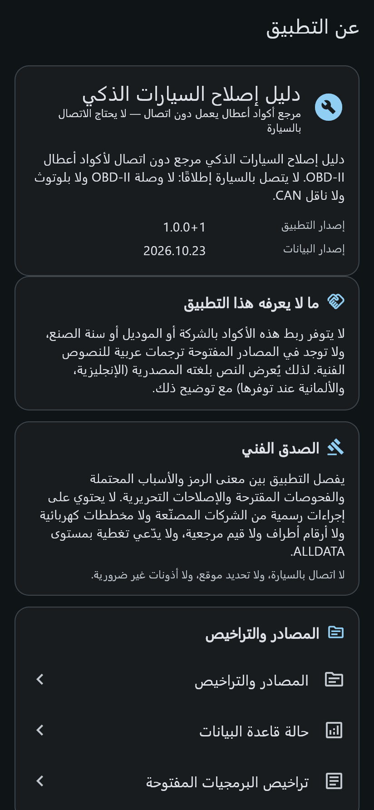
يشرح هذا القسم صراحةً أن التطبيق لا يتصل بالسيارة إطلاقًا، ولا يقدّم إجراءات رسمية من الشركات المصنّعة، ولا مخططات كهربائية ولا أرقام أطراف ولا قيم مرجعية، وأنه ليس بديلًا عن معلومات الصيانة الرسمية.
١٥ المظهر الإنجليزي والوضع الفاتح
نفس المحتوى بترتيب LTR وبألوان فاتحة — مفيد للمشاركة على الشاشة أو الطباعة.
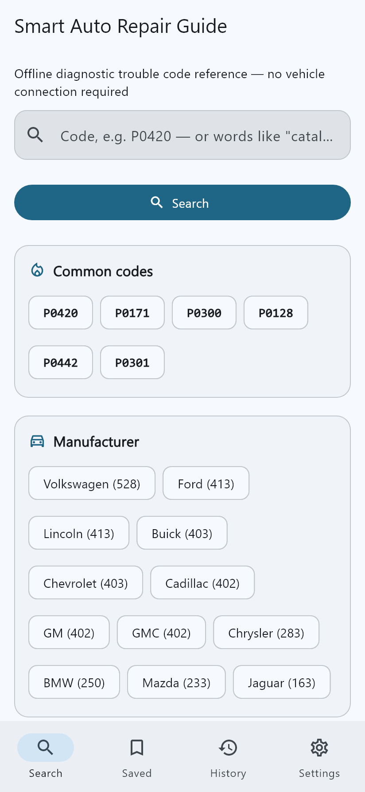
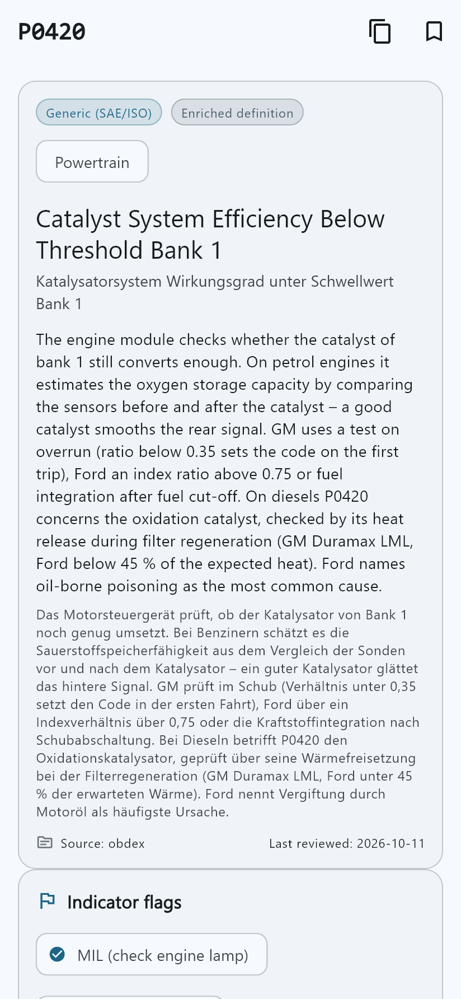
التبديل من الإعدادات ← اللغة والاتجاه و← المظهر. كل الشاشات تدعم الاتجاهين، وتُعرض النصوص الفنية دائمًا باتجاهها الصحيح حتى داخل الواجهة العربية.
١٦ أسئلة شائعة ومشاكل متوقعة
أكثر ما يسأل عنه المستخدمون، بإجابات مباشرة.
هل يعمل التطبيق دون إنترنت فعلًا؟
نعم. كل المحتوى والبحث والجلسات تعمل محليًا. الإنترنت مطلوب فقط لتحديث قاعدة البيانات أو لاستخدام المساعد الذكي، وكلاهما اختياري.
هل يقرأ أعطال سيارتي بنفسه؟
لا. التطبيق مرجع، لا جهاز فحص. اقرأ الرمز بجهاز OBD‑II ثم أدخله في البحث. لا توجد أي وصلة أو بلوتوث أو ناقل CAN.
بحثت عن رمز فلم أجد نتيجة — لماذا؟
ثلاثة أسباب محتملة بالترتيب:
- الرمز خاص بشركة لم تُشمَل في القاعدة بعد.
- الرمز مكتوب بصيغة مختلفة (تحقق من الحروف والأرقام: حرف P/B/C/U ثم أربعة أرقام ست عشرية).
- الرمز غير موجود في المصادر المفتوحة المستخدمة أصلًا.
جرّب البحث دون تصفية الشركة، أو ابحث بكلمة وصفية إنجليزية.
لماذا النصوص الفنية بالإنجليزية وليست بالعربية؟
لأن المصادر المفتوحة المرخّصة لا تحتوي نصوصًا عربية، والتطبيق يرفض الترجمة الآلية للنصوص الفنية حفاظًا على الدقة. الواجهة والأزرار والرسائل كلها عربية.
ما معنى «إصلاح تحريري مرتّب»؟
خطوات مجمّعة ومرتّبة من مصادر عامة، وليست إجراءً رسميًا من الشركة المصنّعة. تعامل معها كإرشاد، وتحقّق من وثائق الصيانة الرسمية قبل استبدال أي قطعة.
أضفت مفتاح Gemini لكن «اختبار الاتصال» يفشل
- تأكد أن المفتاح صحيح ومُفعّل في حسابك.
- تأكد من وجود إنترنت فعّال على الجهاز.
- تأكد أن الموديل المختار متاح لحسابك.
- إذا ظهر «تم تجاوز حد الطلبات»، انتظر قليلًا ثم أعد المحاولة.
هل تُرسل بيانات سيارتي أو موقعي إلى أي جهة؟
لا. لا يوجد تسجيل دخول ولا تتبع ولا موقع. عند استخدام المساعد الذكي فقط، يُرسل سجل الرمز من قاعدة البيانات المحلية إلى واجهة Gemini، دون أي بيانات مركبة أو موقع.
كيف أُعيد الإصدار السابق من البيانات؟
من الإعدادات ← تحديثات البيانات، يظهر زر استعادة الإصدار السابق عند وجود نسخة محفوظة من آخر تحديث. الاستعادة صريحة ولا تحدث تلقائيًا.
هل يمكن استخدام التطبيق على آيفون أو على الحاسوب؟
الإصدار الحالي مخصّص لأندرويد. لا توجد نسخة iOS أو سطح مكتب أو ويب.
حفظت أكوادًا كثيرة — هل تُفقد عند التحديث؟
لا. المحفوظات والسجل والجلسات في قاعدة بيانات مستخدم منفصلة، وتحديث المحتوى لا يمسّها.
١٧ حدود التطبيق (بصراحة)
معرفتها يوفّر عليك وقتًا، ويمنع أخطاء قرار.
| الحد | ماذا يعني عمليًا |
|---|---|
| لا ربط بين الرمز والسيارة | لا يمكنك السؤال «هل هذا الرمز يخص تويوتا كامري 2018؟» — الربط غير متوفر في المصادر المفتوحة، وجدول نطاق السيارات فارغ عن قصد. |
| تغطية الإجراءات محدودة | 326 إجراءً فقط من أصل 12,412 رمزًا (أقل من 1%). معظم الرموز لها تعريف وأسباب وأعراض، لكن دون إجراء خطوة بخطوة. |
| النصوص الفنية بلغتها الأصلية | إنجليزية، وألمانية عند توفرها. لا ترجمة آلية. |
| نطاق السوق: الخليج | الشركات المشمولة 25 شركة تُباع رسميًا في أسواق الخليج. الشركات الأخرى مستبعدة عند بناء البيانات. |
| لا بيانات كهربائية أو أرقام أطراف | لا مخططات ولا قيم مرجعية من الشركات المصنّعة، ولا ادّعاء بتغطية بمستوى مراجع الصيانة التجارية. |
| التكاليف تقديرية | بالدولار، تحريرية، وتختلف حسب المنطقة والسيارة. |
| التحديث يدوي | لا يوجد تحديث تلقائي في الخلفية؛ أنت من يضبط المصدر ويضغط التحقق. |
الرمز المخزَّن يشير إلى عرض، وليس إلى عطل مؤكد. لا تستبدل قطعة بناءً على الرمز وحده. اتبع تحذيرات السلامة في الإجراءات، وارجع إلى وثائق الصيانة الرسمية عند الشك.